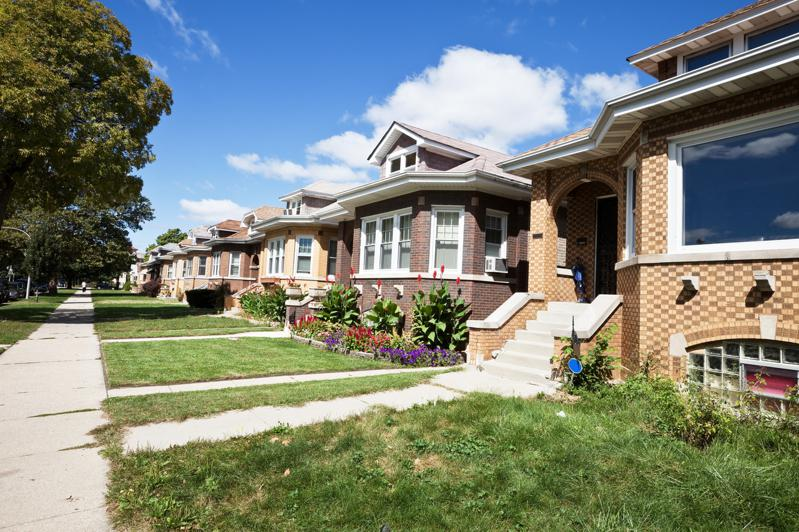

房屋仲介与贷款服务商「红鳍」(Redfin)公司8日表示，房市总值破兆元的美国城市，去年仅四个，今年倍增为八个， 显示房价上涨迅速。
去年，纽约、洛杉矶、亚特兰大和波士顿住宅房地产的总值，各超过1兆元，今年添加的四个城市：芝加哥、凤凰城、华府和加州的安那罕(Anaheim)。圣地牙哥和西雅图紧追其后，房市总值各达9870亿元和9710亿元。
红鳍研究人员分析2024年6月全美9500万户住宅的估计市值，提出如上报告，并称全美民宅的总市值，这一年跃增了3.1兆元，达49.6兆元历史新高。
洪鳍公司的经济学者赵辰(Chen Zhao译音)说，因为市场上成屋为数不多，无法压低房价，美国住宅市场总值，很可能在未来12个月内突破50兆元。
房价居高不下，「买不起房」成为一整个世代以来最严重的问题。新冠疫情期间，在家上班的人数骤增，消费者趁低利率换大房、购新屋，是造成房价飙升的一大原因。接着，联准会为了打击通膨，不断调升利率，房贷利率水涨船高，「房奴」的负担随而加重。
红鳍说，各都市房价涨幅不一，过去一年涨得最凶的是新泽西州可通勤到纽约上班的两个都市—新布朗斯威克(New Brunswick)和纽瓦克，各涨了13.3%和13.2%。其他涨幅逾10%的还有安纳罕、康州纽海文(New Haven)和南卡州查尔斯顿。
大都会区房市不涨反跌的，全美国只有一个，那就是佛州的珊瑚角(Cape Coral)，一年来下跌1.6%。纽奥良和奥斯丁涨幅不到2%。
随着市场预期联准会9月可能降息，房贷利率已抢先走滑，赵辰说，这反而会促成房价更加上涨，因为很多买家和卖家都等着上场，对有房阶级，这是好消息，但首购族要买到负担得起的房子，仍不容易。